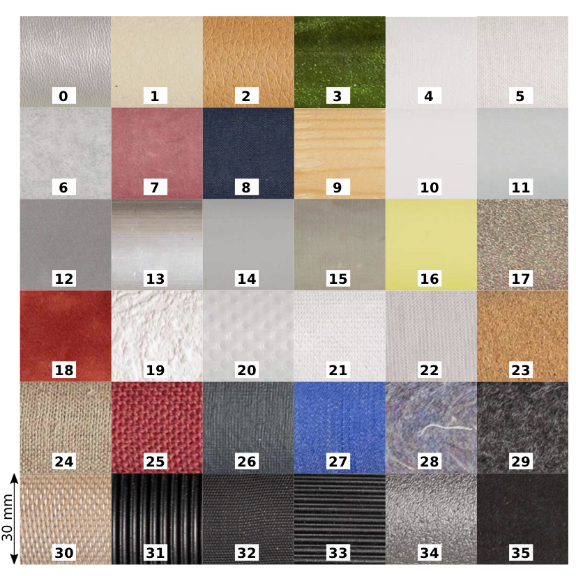

7.0
tactmat: DLR’s Robotic Tactile Material Classification Dataset
Here we provide the tactmat material dataset as used in our Humanoids 2018 paper. Please cite the paper as follows:
@inproceedings{Tulbure2018, |
Author = {Andreea Tulbure and Berthold B{\"a}uml}, |
Booktitle = {Proc. IEEE/RAS International Conference on Humanoid Robots}, |
Title = {Superhuman Performance in Tactile Material Classification and Differentiation with a Flexible Pressure-Sensitive Skin}, |
Year = {2018}} |
Dataset
- tactmat.h5: The compressed HDF5 file with two HDF5-Datasets
"samples": An array with dimensions [materials=36][samples=100][time_steps=1000][taxels-x=4][taxels-y=4]
"maerials": a list of the 36 material names
- tactmat.py: Small Python module for loading the dataset.
Example usage:import tactmat
(samples, materials) = tactmat.load('tactmat.h5')
print(samples.shape)
print(materials)
Description
The 36 materials as found in typical households.
